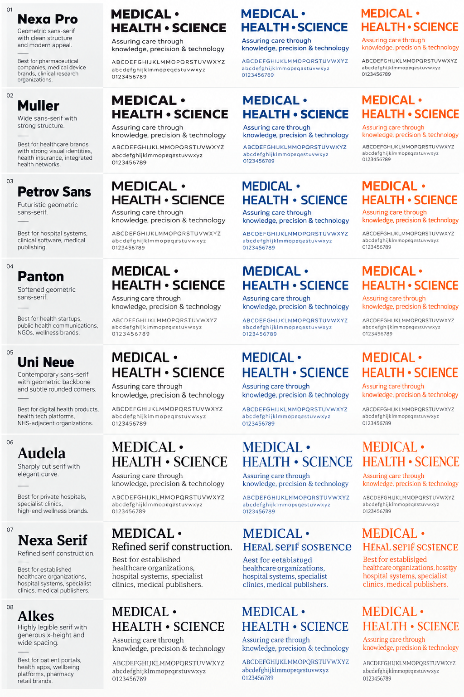
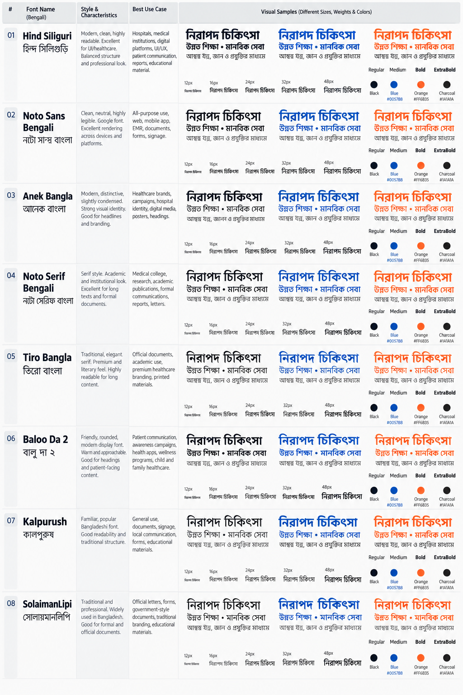

Candidate is not permission to distribute
The supplied images are visual references, not font licenses. Six Bangla families are locally included with SIL OFL license files. The eight English candidates and Kalpurush/SolaimanLipi require separate font and license confirmation.
UI default
Hind Siliguri for Bangla interfaces, patient/student actions and institutional communication. Use 400 body, 500 labels, 600 headings, 700 emphasis.
Academic default
Noto Serif Bengali for formal documents, reports, research and extended academic reading. Noto Sans Bengali for forms and small labels.
English production
Use a licensed geometric sans (Nexa Pro/Muller candidate) or approved Source Sans 3 fallback; licensed serif candidate or Georgia for academic headings. Do not ship unlicensed fonts.
Offline preview: this page loads the included Bangla fonts via fonts.css. English candidate names appear in the family stacks, but render with fallback unless properly licensed and installed. Browser-rendered samples are not proof of a candidate’s actual design.
View English reference

View Bangla reference

Test real content, sizes and weights
Weights above a font’s available range may be synthesized by the browser. Use the exact weights documented for each family. Keep Bangla body at least 16px and use generous line height.
Typography follows the chosen model
Muller + Hind Siliguri
Preferred candidate: Muller Semibold for institutional headings; Muller Regular/Arial for body. Open fallback: Source Sans 3/Arial. Bangla UI: Hind Siliguri; academic: Noto Serif Bengali.
জ্ঞান · সেবা · একাডেমিক শিষ্টাচার
Panton + Hind Siliguri
Preferred candidate: Panton for softened, approachable headings; regular sans for readable body. Open fallback: Source Sans 3/Arial. Use Baloo Da 2 only for selected patient/family campaign headlines.
সুস্থতা · মানবিকতা · কমিউনিটি স্বাস্থ্য
Nexa Pro + Anek Bangla
Preferred candidate: Nexa Pro for precise digital headlines; licensed sans/Arial for body. Open fallback: Source Sans 3. Anek Bangla for campaign headings; Noto Sans Bengali for interfaces and long text.
উদ্ভাবন · প্রযুক্তি · বৈশ্বিক দৃষ্টিভঙ্গি
Accessibility is part of the font system
| Digital scale | Display 48–72px / H1 38–40px / H2 30px / H3 21–22px / Body 16–18px / Labels 14–16px / Captions 13–14px. Do not place essential text below 12px. |
|---|---|
| Bangla | Body 17–18px preferred; line height 1.8–1.95; avoid artificial condensed spacing and all-caps styling. Test conjuncts, vowel signs, numerals, punctuation and mixed English/Bangla lines. |
| Weights | 400 regular body / 500 labels / 600 headings / 700 strong emphasis / 800 limited display only. Do not rely on browser synthesis or thin weights for patient information. |
| Measure & spacing | 65–80 Latin characters per line; test Bangla line length with native readers. Body line height 1.55–1.7 English, 1.8–1.95 Bangla; avoid justified text and negative tracking. |
| Body 10.5–11pt; captions 8pt minimum; clinical forms 10pt minimum. Use true embedded fonts, preflight Bangla shaping, proof on actual stock, and include licensed production copies. | |
| Data & numerals | Use tabular numerals for schedules/results where supported. Labels must accompany charts and statuses. Never use font weight or color alone for clinical meaning. |
| Localization | English and Bangla receive equal content priority. Native editorial review must verify official names, technical terminology, numerals, dates and meaning—not just visual appearance. |
| Font governance | Record font filename, version, source, license, permitted media, owner and fallback. Do not send licensed desktop fonts to vendors unless the license explicitly permits it. |
Open assets: local Bangla font families are under SIL OFL 1.1; see their OFL.txt files in fontsystem/fonts/. The license is included with each family. No unlicensed English commercial font binary is included in this package.